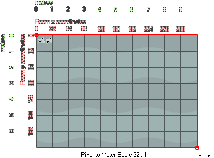

physics_world_create(pixeltometrescale);
| Argumento | Descripción |
|---|---|
| pixeltometrescale | define la relación de píxeles en pantalla a metros en el mundo real. Una relación de 32: 1 se especificará como 1/32 (o 0.03125). |
Devoluciones: N / A
Incluso si ha definido la física de sus objetos, sin un mundo en el que colocarlos, se utilizará de manera predeterminada el sistema de colisión GameMaker Studio 2 tradicional, por lo que necesita esta función para crear el sistema de física para la sala especificada en un evento de objeto. o el código de creación de la sala en sí (también se puede definir sin usar el código en el editor de sala). Esta función asociará un "mundo" de física con la sala y todas las instancias creadas en la sala se comportarán utilizando la física que se ha definido para ellas y para el mundo en sí.

Notarás que tenemos un argumento que define una relación entre el tamaño del píxel y los metros. Esto se debe a que las funciones físicas funcionan con mediciones del mundo real y, por lo tanto, debemos traducir las coordenadas de píxel y los tamaños de píxeles en estas mediciones del mundo real utilizando una "escala de píxel a medidor". Deberá ajustar la configuración de escala de pixeltomet hasta que el tamaño de píxel promedio de los objetos que está utilizando se traduzca aproximadamente en objetos de física simulada de un tamaño apropiado, y arriba puede ver que lo hemos configurado en 32 píxeles equivalentes a 1 metro. Cabe señalar que el sistema de física funcionará con relaciones cada vez más pequeñas, pero que el mejor rendimiento se obtiene cuando las medidas del mundo real de los objetos no son menores de 0,1 metros y no más de 50 metros.
physics_world_create(1/32)
El código anterior creará un mundo de física en la sala actual con una relación de escala de 32 píxeles que es equivalente a 1 metro.